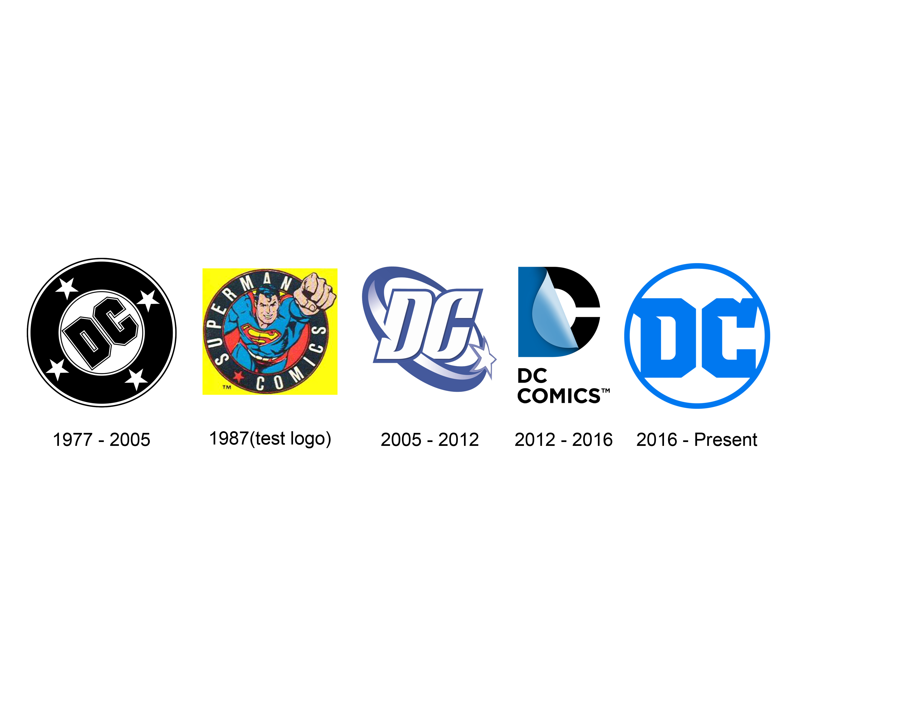

DC Comics Inc. is an American comic book publisher and the flagship unit of DC Entertainment, a subsidiary of the Warner Bros. Global Brands and Experiences division of Warner Bros., which itself is a subsidiary of AT&T's WarnerMedia through its Studios & Networks division. DC Comics is one of the largest and oldest American comic book companies, with their first comic under the DC banner being published in 1937. The majority of its publications take place within the fictional DC Universe and feature numerous culturally iconic heroic characters, such as Superman, Batman, and Wonder Woman. It is widely known for some of the most famous and recognizable teams including the Justice League, the Justice Society of America, and the Teen Titans. The universe also features a large number of well-known supervillains such as the Joker, Lex Luthor, and Darkseid. The company has published non-DC Universe-related material, including Watchmen, V for Vendetta, Fables and many titles under their alternative imprint Vertigo. Originally in Manhattan at 432 Fourth Avenue, the DC Comics offices have been located at 480 and later 575 Lexington Avenue; 909 Third Avenue; 75 Rockefeller Plaza; 666 Fifth Avenue; and 1325 Avenue of the Americas. DC had its headquarters at 1700 Broadway, Midtown Manhattan, New York City, but DC Entertainment relocated its headquarters to Burbank, California in April 2015.
Entrepreneur Major Malcolm Wheeler-Nicholson founded National Allied Publications in Autumn 1934 intended as an American comic book publishing company. The first publishing of the company debuted with the tabloid-sized New Fun: The Big Comic Magazine #1 (the first of a comic series later called More Fun Comics) with a cover date of February 1935. An anthology title essential for containing original stories not reprinted from newspaper strips unlike many comic book series before. While superhero comics are what DC Comics is known for throughout modern times, the genres in the anthology titles consisted of funnies, Western comics and adventure-related stories starting out. The character Doctor Occult, created by Jerry Siegel and Joe Shuster in December 1935 within the issue No. 6 of New Fun Comics, is considered as the earliest recurring superhero created by DC that is still used. The company created a second recurring title called New Comics No. 1 released in December 1935 which would be the start of the long-running Adventure Comics series featuring many anthology titles as well. Wheeler-Nicholson's next and final title, Detective Comics, advertised with a cover illustration dated December 1936, eventually premiered three months late with a March 1937 cover date. The themed anthology that revolved originally on fictional detective stories became in modern times the longest-running ongoing comic series. A notable debut in the first issue was Slam Bradley created in contribution by Malcom-Wheeler-Nicholson, Jerry Siegel and Joe Shuster. In 1937, in debt to printing-plant owner and magazine distributor Harry Donenfeld — who also published pulp magazines and operated as a principal in the magazine distributorship Independent News — Wheeler-Nicholson had to take Donenfeld on as a partner to publish Detective Comics No. 1. Detective Comics, Inc. (which would help inspire the abbreviation DC) was formed, with Wheeler-Nicholson and Jack S. Liebowitz, Donenfeld's accountant, listed as owners. Major Wheeler-Nicholson remained for a year, but cash-flow problems continued, and he was forced out. Shortly afterwards, Detective Comics, Inc. purchased the remains of National Allied, also known as Nicholson Publishing, at a bankruptcy auction.
DC Entertainment, Inc. is a subsidiary of Warner Bros. that manages its comic book units and intellectual property (characters) in other units as they work with other Warner Bros. units. In September 2009, Warner Bros. announced that DC Comics would become a subsidiary of DC Entertainment, Inc., with Diane Nelson, President of Warner Premiere, becoming president of the newly formed holding company and DC Comics President and Publisher Paul Levitz moving to the position of Contributing Editor and Overall Consultant there. Warner Bros. and DC Comics have been owned by the same company since 1969. On February 18, 2010, DC Entertainment named Jim Lee and Dan DiDio as Co-Publishers of DC Comics, Geoff Johns as Chief Creative Officer, John Rood as EVP (Executive Vice President) of Sales, Marketing and Business Development, and Patrick Caldon as EVP of Finance and Administration. In October 2013, DC Entertainment announced that the DC Comics offices were going to move from New York City to Warner Bros. Burbank, California, headquarters in 2015. The other units, animation, movie, TV and portfolio planning, had preceded DC Comics by moving there in 2010. DC Entertainment announced its first franchise, the DC Super Hero Girls universe, in April 2015 with multi-platform content, toys and apparel to start appearing in 2016. Warner Bros. Pictures reorganized in May 2016 to have genre responsible film executives, thus DC Entertainment franchise films under Warner Bros. were placed under a newly created division, DC Films, created under Warner Bros. executive vice president Jon Berg and DC chief content officer Geoff Johns. This was done in the same vein as Marvel Studios in unifying DC-related filmmaking under a single vision and clarifying the greenlighting process. Johns also kept his existing role at DC Comics. Johns was promoted to DC president & CCO with the addition of his DC Films while still reporting to DCE President Nelson. In August 2016, Amit Desai was promoted from senior vice president, marketing & global franchise management to exec vice president, business and marketing strategy, direct-to-consumer and global franchise management. DC Entertainment and Warner Bros. Digital Networks announced in April 2017 DC Universe digital service to be launched in 2018 with two original series
DC's first logo appeared on the April 1940 issues of its titles. The small logo, with no background, read simply, "A DC Publication". The November 1941 DC titles introduced an updated logo. This version was almost twice the size of the previous one and was the first version with a white background. The name "Superman" was added to "A DC Publication", effectively acknowledging both Superman and Batman. This logo was the first to occupy the top-left corner of the cover, where the logo has usually resided since. The company now referred to itself in its advertising as "Superman-DC".[121] In November 1949, the logo was modified to incorporate the company's formal name, National Comics Publications. This logo also served as the round body of Johnny DC, DC's mascot in the 1960s. In October 1970, DC briefly retired the circular logo in favour of a simple "DC" in a rectangle with the name of the title, or the star of the book; the logo on many issues of Action Comics, for example, read "DC Superman". An image of the lead character either appeared above or below the rectangle. For books that did not have a single star, such as anthologies like House of Mystery or team series such as Justice League of America, the title and "DC" appeared in a stylized logo, such as a bat for "House of Mystery". This use of characters as logos helped to establish the likenesses as trademarks, and was similar to Marvel's contemporaneous use of characters as part of its cover branding. DC's "100 Page Super-Spectacular" titles and later 100-page and "Giant" issues published from 1972 to 1974 featured a logo exclusive to these editions: the letters "DC" in a simple sans-serif typeface within a circle. A variant had the letters in a square. The July 1972 DC titles featured a new circular logo. The letters "DC" were rendered in a block-like typeface that remained through later logo revisions until 2005. The title of the book usually appeared inside the circle, either above or below the letters. In December 1973, this logo was modified with the addition of the words "The Line of DC Super-Stars" and the star motif that continued in later logos. This logo was placed in the top center of the cover from August 1975 to October 1976. When Jenette Kahn became DC's publisher in late 1976, she commissioned graphic designer Milton Glaser to design a new logo. Popularly referred to as the "DC bullet", this logo premiered on the February 1977 titles. Although it varied in size and colour and was at times cropped by the edges of the cover, or briefly rotated 4 degrees, it remained essentially unchanged for nearly three decades. Despite logo changes since 2005, the old "DC bullet" continues to be used only on the DC Archive Editions series. In July 1987, DC released variant editions of Justice League No. 3 and The Fury of Firestorm No. 61 with a new DC logo. It featured a picture of Superman in a circle surrounded by the words "SUPERMAN COMICS". The company released these variants to newsstands in certain markets as a marketing test. On May 8, 2005, a new logo (dubbed the "DC spin") was unveiled, debuting on DC titles in June 2005 with DC Special: The Return of Donna Troy No. 1 and the rest of the titles the following week. In addition to comics, it was designed for DC properties in other media, which was used for movies since Batman Begins, with Superman Returns showing the logo's normal variant, and the TV series Smallville, the animated series Justice League Unlimited and others, as well as for collectibles and other merchandise. The logo was designed by Josh Beatman of Brainchild Studios and DC executive Richard Bruning. In March 2012, DC unveiled a new logo consisting of the letter "D" flipping back to reveal the letter "C" and "DC ENTERTAINMENT". The Dark Knight Rises was the first film to use the new logo, while the TV series Arrow was the first series to feature the new logo. DC Entertainment announced a new identity and logo for another iconic DC Comics universe brand on May 17, 2016. The new logo was first used on May 25, 2016, in conjunction with the release of DC Universe: Rebirth Special #1 by Geoff Johns.
